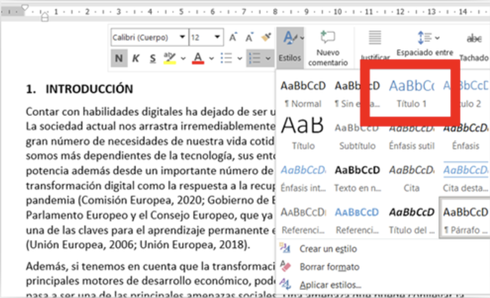
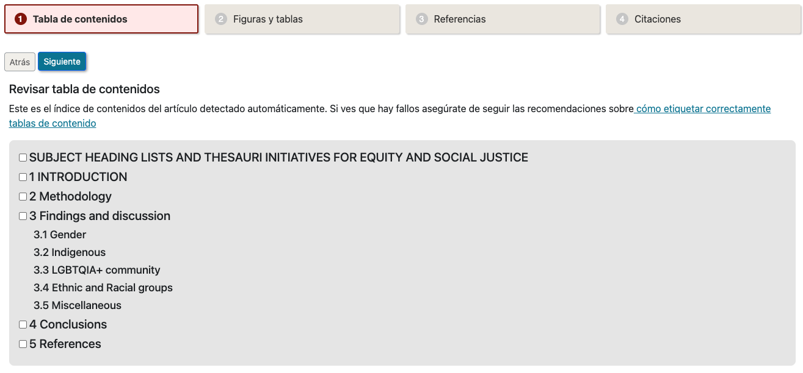
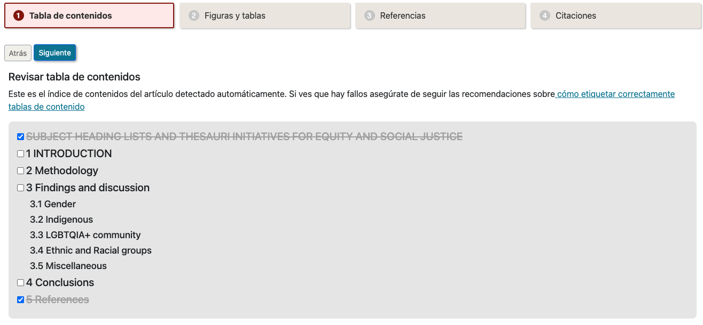
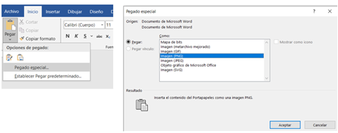

La conversión de un documento redactado en formato Microsoft Word (DocX) al estándar XML-JATS (Journal Article Tag Suite) es un proceso esencial en el flujo de trabajo de muchas publicaciones científicas y académicas que desean ajustarse a los estándares de interoperabilidad y archivo definidos por iniciativas como PubMed Central o SciELO. Sin embargo, esta conversión no es trivial: para generar un XML-JATS de calidad, el documento DocX de partida debe estar cuidadosamente estructurado y marcado.
Este marcado no se limita únicamente al uso correcto de estilos para títulos, subtítulos o elementos como tablas e imágenes. También es imprescindible una gestión rigurosa de la bibliografía mediante herramientas especializadas como Zotero o Mendeley. Estas aplicaciones permiten insertar y gestionar referencias bibliográficas de forma estructurada, lo que facilita posteriormente su detección y transformación automática durante el proceso de conversión a XML.
En la práctica, es poco realista esperar que los autores realicen por sí mismos este trabajo de marcado y estructuración con el nivel de detalle requerido. Delegar esta tarea a posteriori en perfiles editoriales, como editores técnicos o asistentes editoriales, supone un esfuerzo muy elevado en términos de tiempo y coste. Este cuello de botella se convierte en uno de los principales obstáculos para la adopción masiva del formato XML-JATS en flujos de publicación tradicionales.
Con el objetivo de mitigar este problema, se ha desarrollado una herramienta de marcado automático que permite transformar documentos DocX en archivos XML-JATS de forma semiautomatizada. Esta herramienta analiza el contenido del documento, detecta patrones estructurales comunes y aplica una conversión inicial automática. Además, proporciona mecanismos asistidos para completar manualmente aquellas secciones que no hayan podido ser identificadas de forma confiable por el sistema. El resultado es una solución híbrida que reduce significativamente el esfuerzo requerido para producir documentos XML-JATS válidos y de calidad, haciendo viable su uso incluso en entornos con recursos editoriales limitados.
El proceso de conversión de documentos DocX a XML-JATS se ha estructurado en cuatro fases principales. Cada una de ellas aborda un aspecto clave del marcado estructural necesario para generar un archivo XML válido y semánticamente completo. Esta división permite abordar de forma progresiva los distintos niveles de complejidad involucrados en la transformación, al tiempo que facilita la intervención puntual del usuario únicamente cuando es estrictamente necesario.
La primera fase consiste en asegurar que el documento de origen incluye una tabla de contenidos correctamente generada mediante el uso de los estilos y herramientas de estructuración que ofrece el propio procesador de textos (por ejemplo, los estilos de título en Microsoft Word). Este paso es fundamental para que el sistema de conversión pueda identificar con precisión la jerarquía del contenido (secciones, subsecciones, apartados) y traducirla al formato estructurado requerido por XML-JATS. Dado que este proceso depende directamente de cómo ha sido redactado el documento, se considera una tarea que debe ser realizada por el autor antes de someter el archivo al sistema de conversión.
En esta etapa se inspecciona el uso de elementos gráficos en el documento, como imágenes, esquemas o diagramas. Es imprescindible que todas las figuras estén insertadas en un formato de imagen compatible (como PNG, JPG o TIFF) y que cada una de ellas esté acompañada de su correspondiente título o pie de figura. Esta información no solo es clave para la correcta representación visual del artículo, sino que también tiene implicaciones semánticas en el marco de JATS, donde cada figura debe estar identificada y descrita adecuadamente. En muchos casos, la herramienta de conversión puede detectar y etiquetar automáticamente estos elementos, pero se recomienda una revisión manual para garantizar su completitud y coherencia.
Una vez procesado el documento, el sistema realiza una detección automática de la bibliografía. Esta fase consiste en verificar que todas las referencias han sido correctamente identificadas y extraídas, y en completar manualmente aquellos campos que el sistema no haya podido interpretar correctamente (por ejemplo, nombres de autores incompletos, títulos abreviados, o datos de publicación ambiguos). Esta revisión es crítica para asegurar que la sección de referencias cumple con los requisitos estructurales y de contenido de XML-JATS, permitiendo su reutilización, indexación y validación posterior.
Por último, se lleva a cabo el proceso de vinculación entre las citas insertadas en el texto y las entradas de la bibliografía previamente detectadas. El sistema intenta generar automáticamente enlaces que asocien cada citación textual con su referencia correspondiente, de modo que en el XML final estas relaciones queden explícitamente representadas. No obstante, debido a la variedad de estilos de citación y a posibles inconsistencias en el documento original, algunas citas pueden no ser reconocidas o asociadas correctamente. Por ello, esta fase puede requerir una revisión y corrección manual por parte del usuario o editor para asegurar una correcta correspondencia entre citas y referencias.
Como parte del proceso de conversión, la herramienta desarrollada permite aplicar un conjunto de reglas de automarcado que facilitan la detección e interpretación de elementos clave dentro del documento DocX. Estas opciones están diseñadas para minimizar la intervención manual, reducir errores y acelerar la preparación del documento para su exportación a XML-JATS. No obstante, el usuario puede optar por desactivarlas si desea mantener el marcado original proporcionado por el autor.
A continuación, se detallan las principales opciones de automarcado disponibles:
Esta opción activa el motor de detección automática de citaciones en el cuerpo del documento. Cuando está habilitada, la herramienta analiza el texto buscando coincidencias con patrones típicos de citación y los vincula automáticamente con las entradas de la bibliografía. Si esta opción se desactiva, se asume que las citaciones ya han sido correctamente vinculadas por el autor o editor, y no se realizará ningún procesamiento adicional sobre ellas.
Para lograr una detección precisa de las citaciones, el motor de marcado automático necesita saber cuál es el formato de citación empleado en el documento. Actualmente, se soportan los siguientes estilos:
Esta selección permite aplicar heurísticas específicas para cada estilo, mejorando considerablemente la precisión en la identificación de citas y su asociación con las referencias bibliográficas.
Cuando está activada esta opción, la herramienta busca automáticamente títulos de figura asociados a las imágenes insertadas en el documento. Para que esta detección sea efectiva, es necesario que el autor haya utilizado un formato estandarizado, preferiblemente empleando estilos de título de Microsoft Word. No obstante, el sistema también puede identificar títulos basándose en patrones textuales comunes como "Figura N", "Fig. N", "Image", "Imagen", entre otros. Los títulos detectados serán etiquetados correctamente en el XML-JATS generado.
De manera análoga a las imágenes, esta opción permite identificar y etiquetar automáticamente los títulos asociados a las tablas incluidas en el documento. El sistema analiza el contenido inmediatamente anterior o posterior a la tabla en busca de expresiones comunes como "Tabla", "Table", "Tab.", etc. Al igual que con las figuras, se recomienda el uso de los estilos de título nativos de Word para asegurar una detección precisa.
En el flujo de visualización utilizado por algunas plataformas de publicación, como las revistas académicas de la Universidad de Murcia, las figuras y tablas se muestran en un panel lateral independiente del texto principal. Activar esta opción permite insertar automáticamente una referencia en el lugar original donde se encontraba la imagen o tabla, indicando al lector la posición que ocupaba en el documento original. De este modo, se preserva el contexto del contenido y se mejora la experiencia de lectura en entornos que externalizan los recursos gráficos.
El ecosistema SciELO (Scientific Electronic Library Online) impone una serie de requisitos adicionales sobre el formato XML-JATS, que si bien no contradicen el estándar, sí lo especializan. Al habilitar esta opción, la herramienta adapta el proceso de marcado para cumplir con las directrices específicas de SciELO, garantizando así la compatibilidad de los archivos generados con su sistema de publicación y validación.
Durante el proceso de conversión, es importante comprender que ciertos aspectos visuales del documento DocX -como el color de fuente, negritas, cursivas decorativas o incluso la numeración automática- no tienen ninguna relevancia para la generación del archivo XML-JATS. Estos elementos son puramente visuales y no forman parte del marcado estructural del documento. Por tanto, no debemos preocuparnos si al aplicar estilos estructurales como "Título 1", "Título 2", etc., se altera el aspecto visual del documento; lo importante es que cada sección esté correctamente etiquetada con el estilo correspondiente.
A medida que avanzamos por el documento, debemos aplicar los estilos de título adecuados a cada sección. Aunque Microsoft Word inicialmente solo muestra los estilos Título 1 y Título 2, el programa añadirá automáticamente niveles adicionales (Título 3, Título 4, etc.) conforme vayamos utilizándolos. Esto permite estructurar el documento con tanta profundidad jerárquica como sea necesaria, respetando la lógica del contenido científico o académico que estamos preparando.

Una vez aplicado el estilo a cada sección, el asistente de conversión analizará el documento y generará una vista previa de la tabla de contenidos detectada. Esta vista previa es fundamental para validar que todos los títulos han sido correctamente reconocidos y clasificados. Si se detecta que falta algún apartado, o si algún título está mal etiquetado (por ejemplo, si se ha usado un estilo de párrafo normal en lugar de un estilo de título), será necesario corregirlo en el documento original antes de continuar con el proceso de conversión.

Además, el asistente ofrece la posibilidad de eliminar manualmente aquellas secciones que no deben ser incluidas en el cuerpo principal del XML-JATS. Esto resulta especialmente útil, ya que ciertos elementos como el título del artículo, los nombres de los autores, el resumen (abstract) o incluso la bibliografía no deben formar parte de la conversión automática del cuerpo del texto. Estos datos se gestionan de forma independiente en el sistema de publicación (por ejemplo, OJS), y serán introducidos automáticamente en sus respectivas secciones del XML mediante los metadatos que el autor ha completado previamente.
Del mismo modo, la sección de "Referencias" o "Bibliografía" también debe excluirse manualmente del esquema de contenidos. Como se explicará más adelante, el motor de conversión se encarga de procesar y etiquetar las referencias bibliográficas de forma estructurada, generando automáticamente una sección <ref-list> compatible con XML-JATS a partir de los datos detectados o completados por el usuario.

Lo primero que tendremos que verificar es que todas las imágenes y gráficos sean realmente imágenes, y no figuras de Word o elementos SmartArt.
El conversor únicamente entiende de imágenes planas en formatos comunes como JPEG o PNG. Cualquier elemento gráfico que no sea una imagen tendremos que sustituirla por una versión en alguno de esos formatos. Lo haremos siguiendo estos pasos:

Una vez convertidas todas las imágenes es conveniente pasar de nuevo el documento a través de la herramienta preview para comprobar que todas las imágenes han sido correctamente detectadas.
El siguiente paso será añadir títulos a cada imagen. Normalmente los autores añaden un párrafo bajo la imagen para indicar el título que desean asignarle a la misma, pero sin hacer uso de la herramienta de gestión de títulos que ofrece Word, que es precisamente la que utiliza el conversor para poder detectar los títulos correctamente.
Para poder marcarlos correctamente, haremos los siguientes pasos: